How admins, teachers and students use Project Pulse to give C programming tasks, follow every student’s GitHub work, and review it, screen by screen.
For TieEdu admins, teachers and students
TieEdu · Project Pulse v2 · November 2026. Screenshots use a sample class; your screens show your own class.
Contents
How Project Pulse works, in one page
Admin: teacher logins and co-teachers
Teacher: set up a class (once)
Teacher: give a task (every task)
Teacher: follow the class on the dashboard
Teacher: review students, one click per requirement
Teacher: one student in full detail
Student: join and set up your repo (once)
Student: do a task and see your progress
Questions and fixes
1. How Project Pulse works, in one page
A teacher gives a C task. Each student keeps one GitHub repo for the whole class and puts each task in its own folder. Pulse reads every repo, so the teacher sees on one screen who started, who is behind, and every line of code. The teacher marks each requirement by hand. There is no AI.
c-lab-2026/ ← one repo per student, for the whole class
├── PULSE.txt ← added once: proves the repo is the student’s
├── task-1/ main.c ← Task 1
├── task-2/ main.c ← Task 2
└── task-3/ … ← new task: the student makes this folder and pushes
Once
For every task
Admin
Create each teacher’s login
—
Teacher
Create the class, invite students
Pick a template or copy a task, set the deadline, publish; then review with one click per requirement
Student
Join, link one repo, add PULSE.txt
Make the folder task-N/ and push code
What Pulse shows
How it knows
Started or not
Commits that changed the task’s folder after the task was assigned
Work over time
Each of those commits: date, time, lines added and removed
The code and what changed
The files in the task’s folder, compared with the starter code
Late, bulk and backdated work
Commits after the deadline; one huge commit; dates that don’t match
Possible copying
Each student’s folder compared with every other student’s (renamed variables still match)
Requirements done
The teacher’s marks: ✓ Done, ~ Partly or ✗ Missing
Test results (optional)
Only if the teacher turns on Auto-run tests for that task
Who sees whatAdmins see everything. A teacher sees only their own classes. A student sees only their own work: never another student’s name, code, score or rank, and never the teacher’s private notes or copy flags.
When it updatesEvery 20 minutes automatically, when the teacher presses Sync now, and when a student presses Re-check my repo.
2. Admin: teacher logins and co-teachers
Teachers can’t sign themselves up. Only an admin creates their login. Open Project Pulse → Teacher portal (tieedu.in/project-pulse/teacher) and scroll to Admin · teachers.
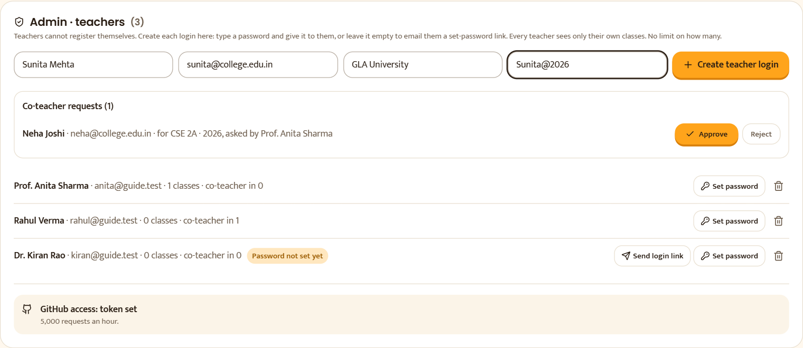
123456789
Admin · teachers, at the bottom of the Teacher portal (admins only).
1Type the teacher’s name, email and college.
2Password (8+ characters): you set it and give it to the teacher yourself. Leave it empty to email them a one-time “Set my password” link (valid 7 days) instead.
3Create teacher login. The teacher can now sign in at tieedu.in/login.
4Co-teacher requests from teachers. Approve creates the person’s login and adds them to that class; Reject discards it.
5Password not set yet: this teacher hasn’t used their emailed link.
6Send login link: email a fresh set-password link and show it to copy.
7Set password: give a teacher a new password (for example if they forgot theirs).
8Remove a teacher. They lose the teacher portal at once; their classes stay.
9Shows whether the GitHub token is set on the server (needed for 5,000 GitHub requests an hour).
How many teachersNo limit. Each teacher has their own portal and sees only their own classes.
3. Teacher: set up a class (once)
Sign in at tieedu.in/login with the email and password the admin gave you.
Open Project Pulse → Teacher portal.
In New class, type a name (for example “CSE 2A · 2026”) and a subject, then click Create class.
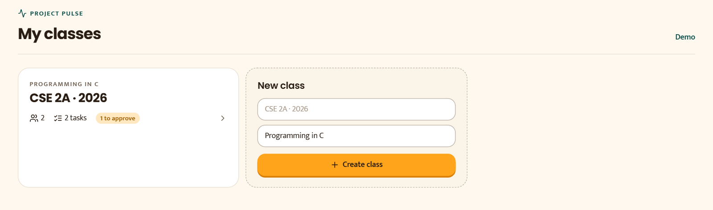
123
My classes: your teacher home.
1A class card: open it to manage students and tasks.
2Students who used the join code and are waiting for your approval.
3New class: create another class.
Open the class. Everything about it is on one page:
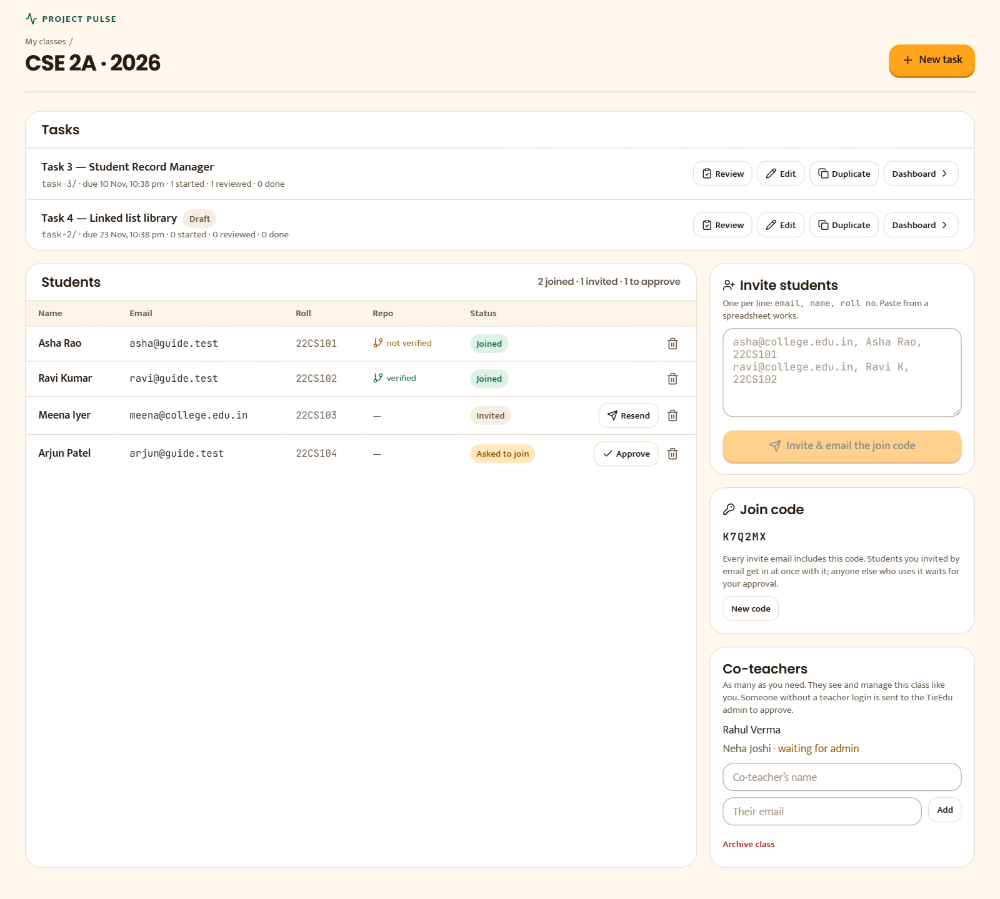
123456789
The class page.
1New task: give the class a task (chapter 4).
2Each task with its folder, deadline, and how many students have started, been reviewed or finished.
3Review: go straight to Review mode for this task.
4Duplicate: copy the task as a draft, with a new folder and the same number of days.
5Repo: whether each student has linked their repo and proved it is theirs.
6Approve a student who asked to join with the code.
7Invite students: paste one line per student, email, name, roll no. Each gets an email with a one-time join link and the class code. The links also appear here to share on WhatsApp.
8Join code: students can type it at tieedu.in/project-pulse/join. Invited emails get in at once; anyone else waits for your approval. New code stops the old one working.
9Co-teachers (any number). An existing teacher is added at once; anyone else goes to the admin to approve.
4. Teacher: give a task (every task, about 3 minutes)
On the class page, click New task. You never make a GitHub repo.
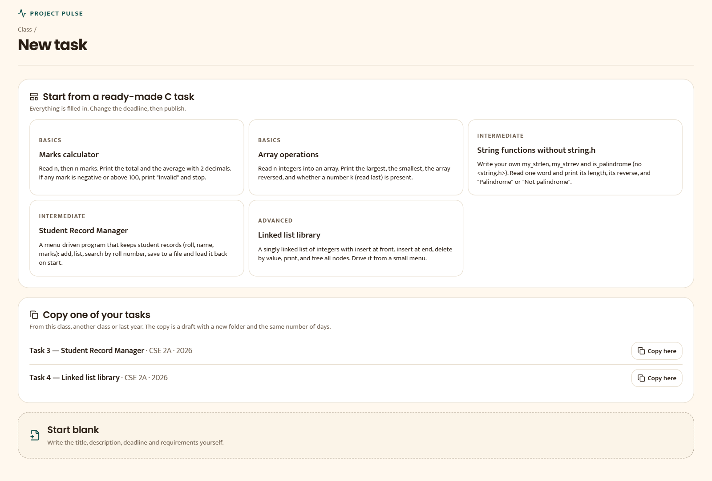
123
Three ways to start a task.
1Ready-made C tasks (Basics to Advanced). Everything is filled in; change the deadline and publish.
2Copy one of your tasks from this class, another class or last year.
3Start blank and write it yourself.
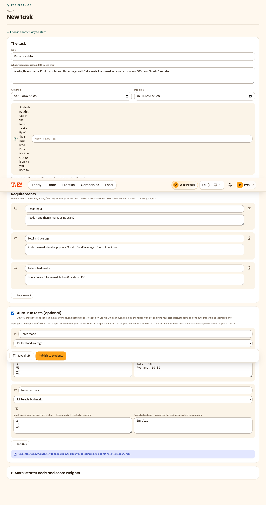
123457
The task editor (here started from the “Marks calculator” template, with tests switched on).
1Title and what students must build. Students see this.
2Assigned and Deadline. Commits before the assigned time don’t count; commits after the deadline are marked late.
3Folder: students put this task in task-N/. Pulse fills it in for you.
4Requirements: one line each, with what counts as done. You mark these later with one click.
5Auto-run tests (optional, off by default). Off: you just read the code. On: every push compiles the folder and runs your tests.
7Publish to students. Until then the task is a draft only you can see.
Test cases, if you use themA test passes when every line of the expected output appears in the program’s output, in order (extra prompts are fine). Leave the input empty if the program asks for nothing. To test a restart, split the input with a line ---run---.
After publishingTell students: “Task 3 is up. Put your code in the folder task-3/ of your class repo and push.” That’s all they need.
5. Teacher: follow the class on the dashboard
Class page → click the task. Here is a full class (sample data):
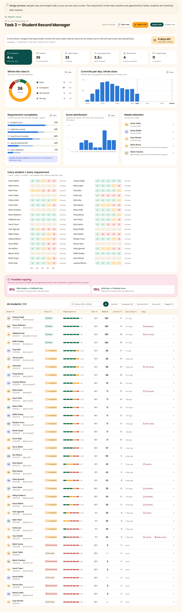
12345678
The task dashboard.
1At a glance: completed, students, repos linked, average requirements met, reviewed, integrity flags.
2Where the class is: click a slice to filter the table below.
3Commits per day from assignment to deadline. Is the class working, or waiting for the last night?
4Requirement completion: the hardest requirement is named, so you know what to re-teach.
5Needs attention: no repo, not started, inactive, wrong folder name, waiting for review.
6Every student × every requirement (✓ ~ ✗ ?). On your live dashboard, click a cell to change the mark.
7Possible copying: pairs of students whose task folders match. A signal to check, not proof.
8All students: search, filter and sort; click a student to open their work.
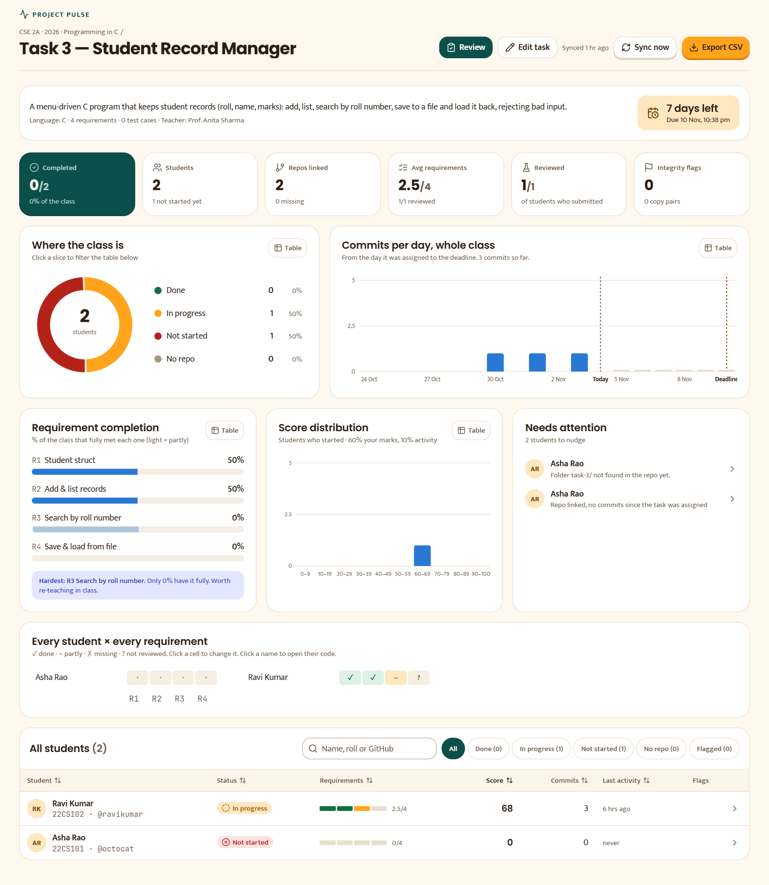
1234
The buttons at the top of your live dashboard.
1Review: open Review mode (chapter 6).
2Sync now: check every student’s repo right away.
3Export CSV: the table, for your marks sheet.
4Reviewed: how many students who submitted you’ve marked.
6. Teacher: review students, one click per requirement
Click Review. Students who have pushed code appear one at a time, the ones you haven’t reviewed yet first.
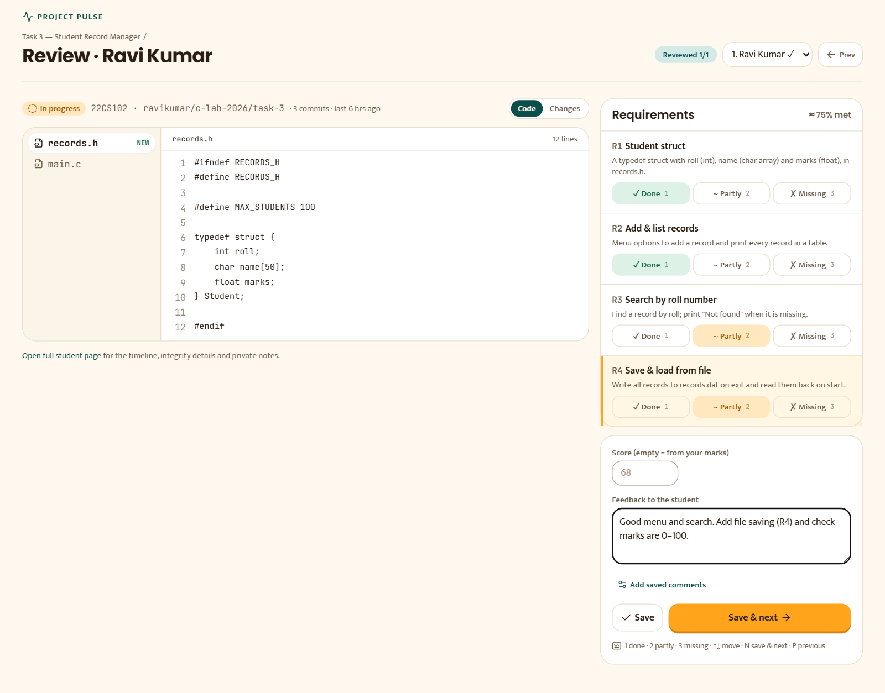
123456789
Review mode.
1How many you’ve reviewed so far.
2Jump to any student (✓ marks the ones already reviewed).
3Their code in the task folder, with line numbers. Changes shows what they added.
4Mark each requirement: ✓ Done, ~ Partly or ✗ Missing. Click again to clear.
5Score: leave empty to use your marks, or type your own.
6Feedback the student will see on their page.
7Saved comments: your own one-click lines, such as “Check fopen for NULL”.
8Save & next: saves and opens the next student.
9Keyboard: 1 done · 2 partly · 3 missing (for the highlighted requirement, then it moves on) · N save & next · P previous.
Typical speedRead the code, press 1/2/3 for each requirement, press N. About a minute per student.
7. Teacher: one student in full detail
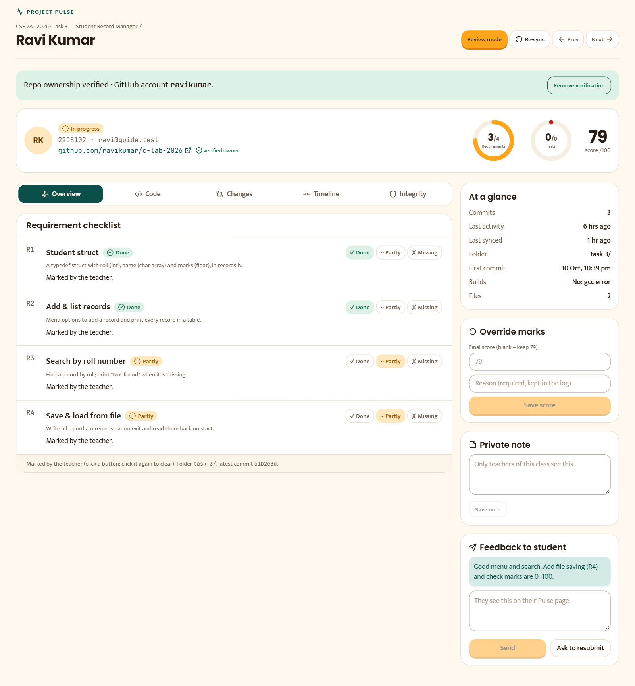
12345678
A student’s page (open it from the table, the grid, or Review mode).
6Override marks: set a final score with a reason (kept in the log).
7Private note: only teachers of the class see it.
8Feedback to student, and Ask to resubmit.
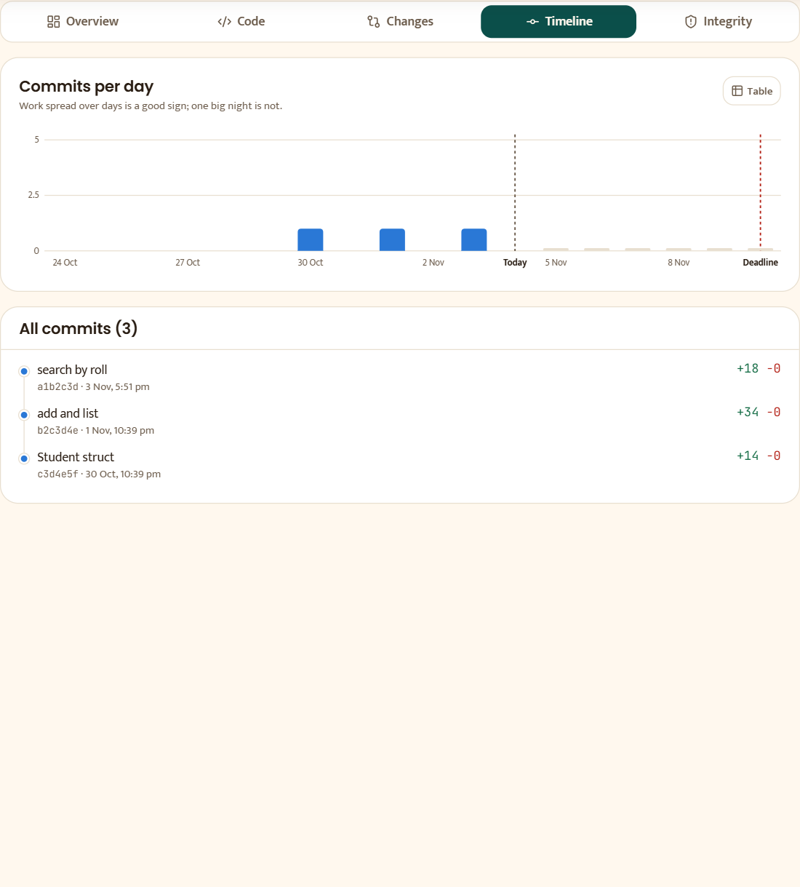
12
Timeline tab: when they actually worked.
1Commits per day in the task folder.
2Every commit: message, time, lines added and removed.
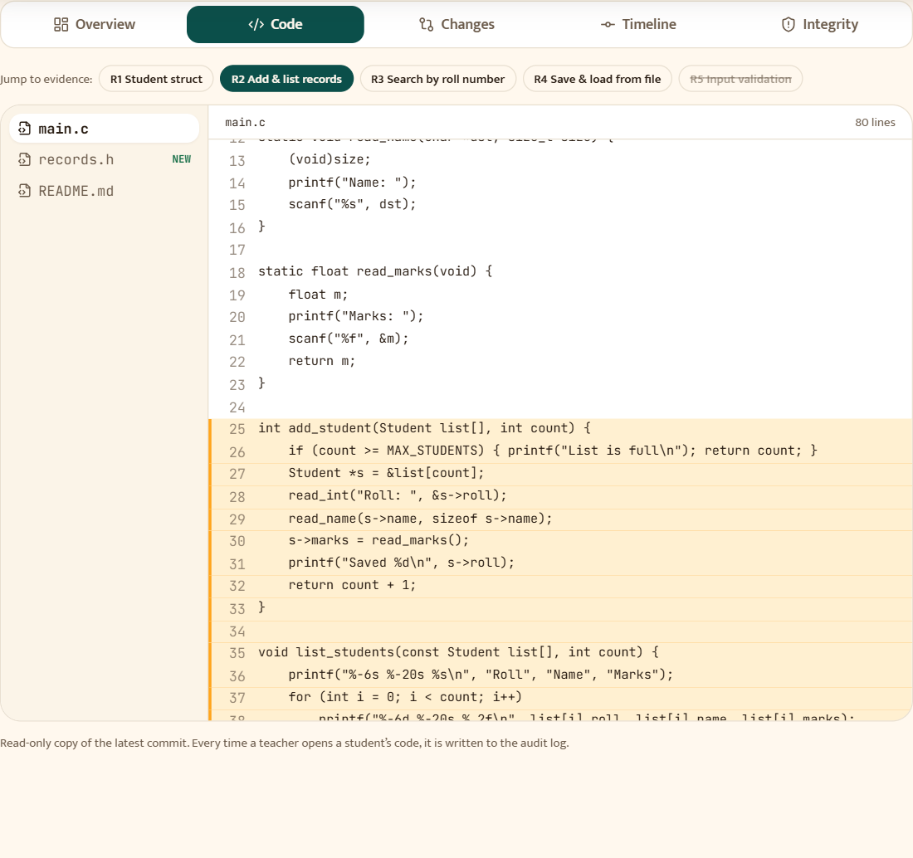
12
Code tab: the student’s files, read-only.
1The files in their task folder.
2Highlighted lines.
Integrity tabLists copying (with whom, and how similar), one bulk commit, backdated or late commits, and a repo that belongs to someone else. These are signals for you to check, never automatic penalties. If a student can’t add PULSE.txt, check the repo with them and click Verify myself.
8. Student: join and set up your repo (once)
Open the invite email and click Join the class, or go to tieedu.in/project-pulse/join and type your class code.
Sign in, or sign up, with the same email your teacher used. You see “You’re in”.
On GitHub, make one public repo for the whole class, for example c-lab-2026.
Open tieedu.in/project-pulse/student, paste the repo link and click Link repo.
Add a file named PULSE.txt to the repo containing the code Pulse shows you, then push and click Re-check my repo.
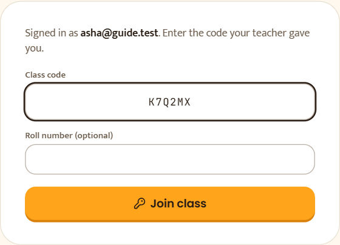
12
Joining with a class code.
1Type the class code from your teacher.
2Join class. With a code you wait for your teacher’s approval; with the invite link you get in at once.
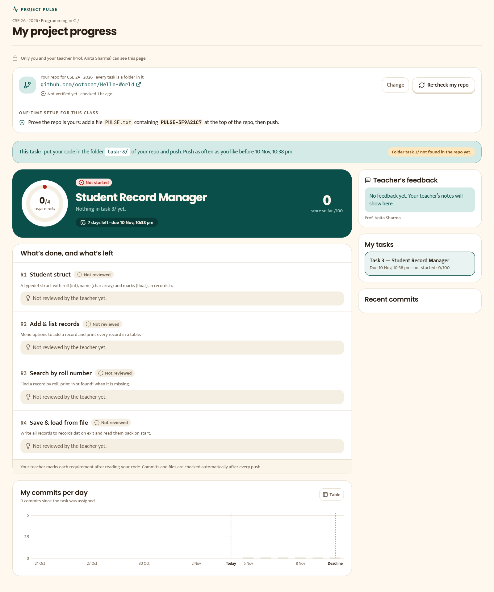
12345
Your page before the repo is verified.
1Your one repo for this class. Change links a different one.
2One-time setup: add PULSE.txt with your personal code to prove the repo is yours. Until then your work doesn’t count.
3Re-check my repo after you push (once every 5 minutes).
4This task: the exact folder to use, and the deadline.
5Pulse tells you when the folder isn’t there yet, or is named wrongly (for example Task3/ instead of task-3/).
9. Student: do a task and see your progress
A new task appears in My tasks with its folder name, for example task-3/.
Put your code in that folder and push. Push as often as you like before the deadline.
Your teacher reviews it. You see their marks and feedback here.
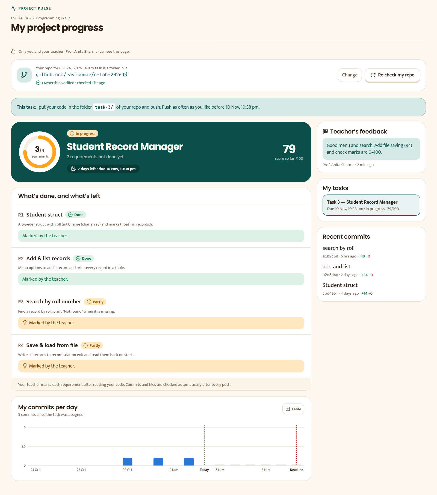
123456
Your progress on a task.
1Status, score and days left.
2A requirement your teacher marked Done.
3A requirement not done yet, or Not reviewed while your teacher hasn’t marked it.
4Teacher’s feedback.
5My tasks: all your tasks in this class.
6Your own commits per day.
PrivateOnly you and your teachers see this page. There is no leaderboard and no other student’s data.
10. Questions and fixes
Problem
What to do
A teacher can’t sign in
Admin: Set password next to their name, or Send login link.
A student says the invite link doesn’t work
They must sign in with the invited email. Teacher: Resend on the class page, or share the join code.
A student shows “Not verified”
They need PULSE.txt with their code in the repo, then Re-check. Or the teacher clicks Verify myself after checking the repo with them.
A student shows “Not started” but says they pushed
Check the folder name: it must be exactly the task’s folder (for example task-3/). Pulse shows the near-miss folder it found.
Two students linked the same repo
When the real owner verifies it, the other student is unlinked and the teacher is told.
Tests say “waiting for the autograder”
Only when Auto-run tests is on: the student must add the autograder file shown on their page, unchanged.